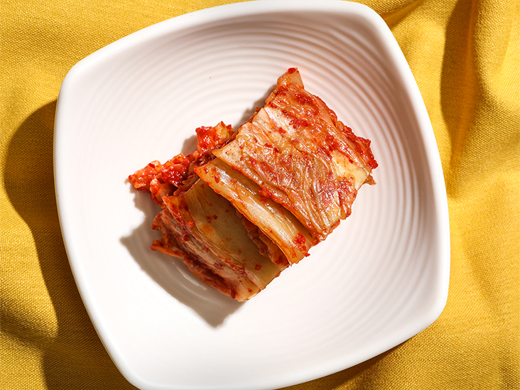

Qué es el kimchi?
El Kimchi es un plato tradicional de la gastronomía coreana hecho con vegetales fermentados y sazonados. Su sabor es salado y picante, y su ingrediente principal es el akusai. Es uno de los alimentos más sanos del mundo.